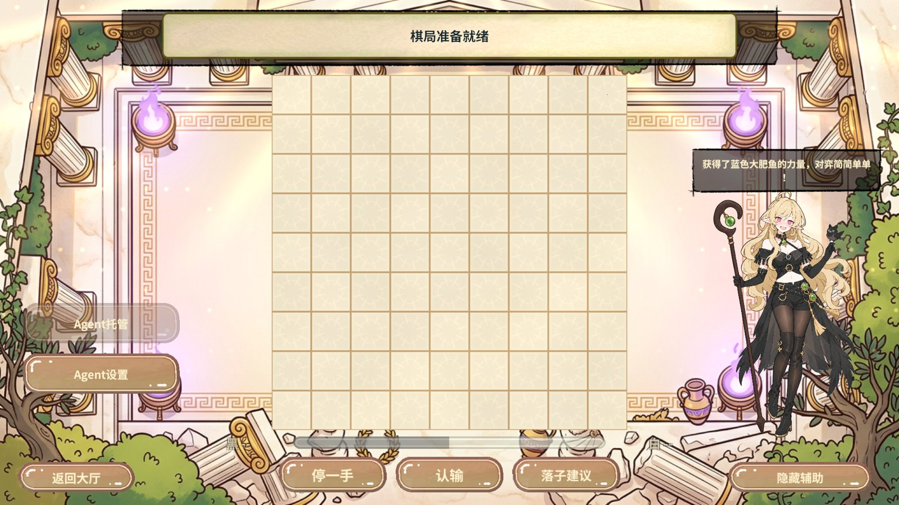
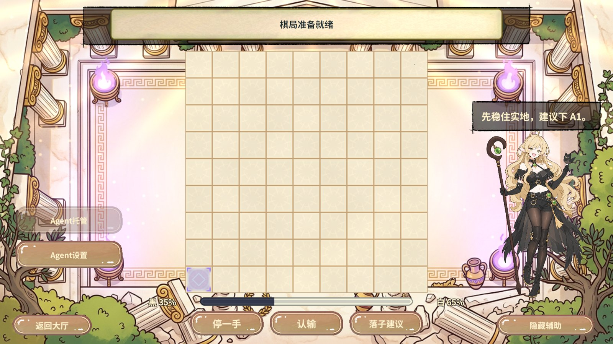
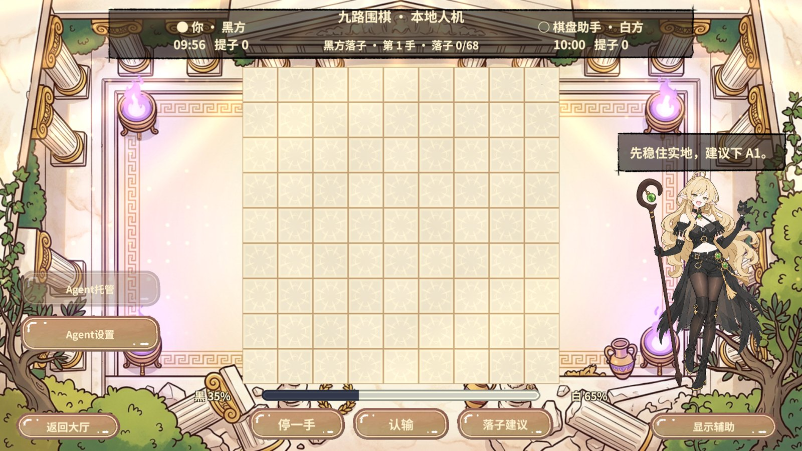
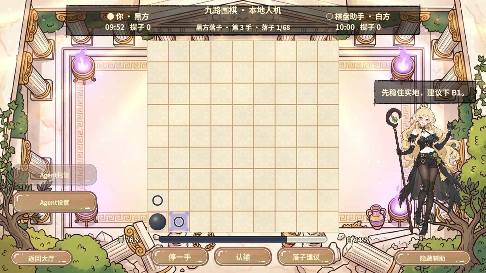
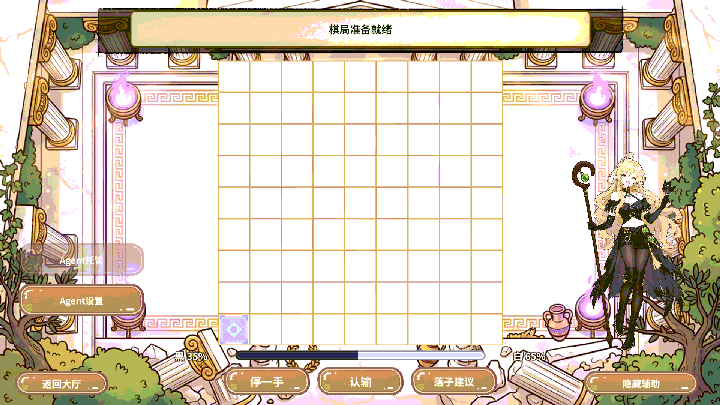

实测结果
| 入口 | 业务断言 |
|---|---|
| 真实 PC 资源 | 正式大厅进入 PVP 后，新进度条从 PvpAgent 图集取图并验证 Sprite 已打包，棋盘实际材质包含且支持新增 Shader 参数。再次从大厅入场，两项检查仍通过。 |
| 本地人机 | 固定 HTTP 回复先显示黑 35%、白 65%，对白与 Shader 都指向 A1。通过实际 EventSystem 关闭和恢复辅助，棋盘高亮随开关切换，胜率继续显示。落下 A1 后旧高亮清除，下一次回复移至 B1，胜率过渡到黑 76%、白 24%。无效分析不产生高亮。 |
| 局域网 UTP | 真实双端邀请、换手与分析通过 22 项断言。两端终局指纹一致，测试服务已清理。 |
面板经 RevUI 和已有图集租约获取素材，RevPool 棋盘通过原有 MaterialPropertyBlock 绘制，实盘规则与落子请求保持独立。新素材来自 Kenney 的 CC0 1.0 发行包。Kenney 原始发布页
Unity 实拍
原图 1920 × 1080，报告图为 1600 像素宽 JPEG。动图由本轮实拍帧合成，含两段高亮与关闭辅助的画面。









环境与复现
RevCLI 刷新导入后以 game.background.build 构建 PC 和 Android AB。首次 PC 构建遇到第五章图集元文件写入错误，核对文件可写后串行重建，两平台成功。
rev_discover 发现 Editor 与 Play 能力，rev_call 进入 Play 并执行 pvp.enter。随后 rev_run 执行 55 个步骤，使用 pvp.analysis-fixture、pvp.presentation、ui.click、pvp.action 和 pvp.lan-analysis-begin 验证。回到大厅后错误数为 0，finally 恢复编辑态。
画面使用本地人机验证，联机本轮覆盖 UTP 规则和分析回归。云端回复使用固定 HTTP 替身。Android 已构建资源，真机和独立 Player 本轮未运行。